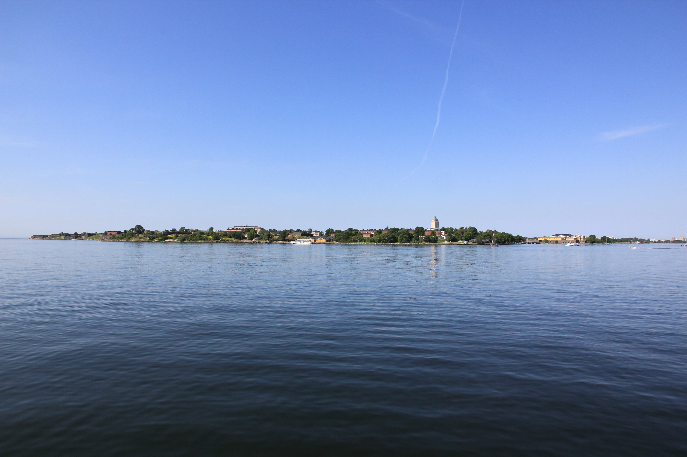

Helsinki · Uusimaa
Suomenlinna
Merilinnoitus Helsingin edustalla – historiaa, saaristomaisemia ja kävelyreittejä.

Mitä Suomenlinnasta löytyy?
Suomenlinna on Unescon maailmanperintökohde. Saarilla voit tutustua linnoitukseen, museoihin ja merimaisemiin sekä pitää tauon kahvilassa tai ravintolassa.
- Historiallisia linnoitusmuureja ja nähtävyyksiä.
- Museoita, opastettuja kierroksia ja näyttelyitä.
- Kahviloita, ravintoloita ja paikkoja omalle evästauolle.
Saapuminen ja liikkuminen
Suomenlinnaan saavutaan vesitse. Tarkista lautan tai vesibussin lähtöpaikka ja aikataulu ennen matkaa.
Saarella kuljetaan jalan. Reiteillä on myös mukulakiveä, mäkiä ja epätasaista maastoa. Tarkista sopiva reitti, jos liikut lastenvaunujen tai apuvälineen kanssa.
Hyvä tietää
Museoilla, ravintoloilla ja muilla palveluilla on omat aukioloaikansa. Suomenlinna on myös asuinalue: noudata alueen opasteita ja kunnioita asukkaiden kotirauhaa.
Suomenlinnan viralliset sivut ↗Lähde: Suomenlinnan hoitokunta · tarkistettu 24.10.2026.